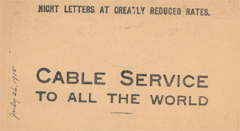
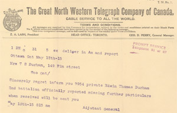

Home • World War One • Sydney Lewis Penhorwood • Canadian Forestry Corps • Royal Family & Canadian Corps
Private Edwin Durham • Second Battle of Ypres • Prisoner of War • Welcome Home
The Second Battle of Ypres
At the beginning of April, 1915, the Canadians were ordered to relieve the French in the Ypres salient in Belgium. A salient is the portion of a battle line that projects out from the rest of the line. It is difficutlt to defend, as the position is exposed to the enemy on three sides. The Ypres salient measured 17 miles and was a critical part of the battle line. The French trenches that the Canadians took over were shallow and unconnected, lacking the proper wooden and earth parapets to protect the men from sniper fire and exploding shells. The Canadians immediately set to work deepening and connecting the trenches, as well as raising the parapets wtih sandbags, but only at night as the Ypres salient was a hot spot due to enemy sniper fire.
On April 22, 1915 the Canadians had a clear view of the first use of chlorine gas by the Germans. The Canadians were spared the worst of the gas, as the yellow-green cloud drifted towards the trenches on their left held by the French. As the French abandoned their positions to escape the poison gas, many of them gasping for air, the Canadian's left flank was left unprotected. Private Ed Durham was part of the Canadian 2nd Battalion that was rushed to fill the abandoned positions in the face of the advancing German infantry. On April 14, the Germans mounted a concentrated attack against the Canadians to take the salient. The attack was once again preceded by the release of poison gas and a heavy bombardment of artillery. As protection against the poison gas, containers of water had been dispersed throughout the trenches and soldiers wrapped soaked handkerchiefs and towels around their faces. Blinded and gasping for breath, the Canadians had little time to recover as the German infantry followed closely behind. The Germans attacked again and again, reinforced by arillery and poison gas. Outnumbered 10-1, the Canadians held fast, limiting the German advance at a cost of 6,000 lives. The 2nd Battalion, numbering 1,000 men, suffered 544 casualties during the battle.
One of the most memorable war poems "In Flanders Fields" was written following the Second Battle of Ypres, by Major John McCrae, a Canadian surgeon attached to the 1st Field Artillery Brigade.
Durham was wounded twice while making a break from his trench in the face of the advancing German infantry. Lying on the ground, Durham was found by a German officer who covered him with blankets and folded a blanket under his head. Later, he was carried to a German dressing station and then to a hospital. Once his wounds were mended, Durham was sent to a prisoner of war camp at Stendal, Germany.
 Cable Service to all the World |
 Telegraph; Private Durham, Missing in Action |
Telegraph; Private Durham, Prisoner Of War |